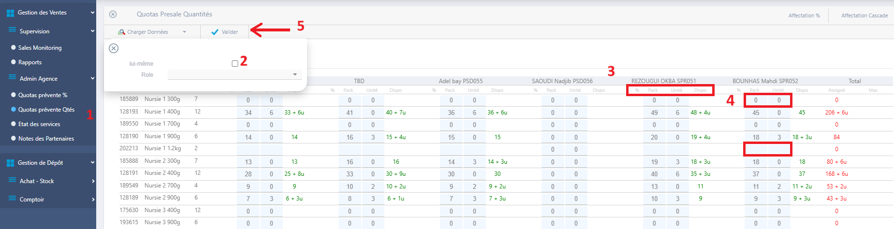
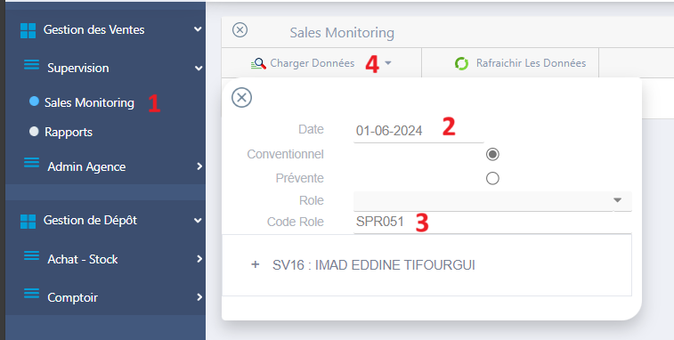
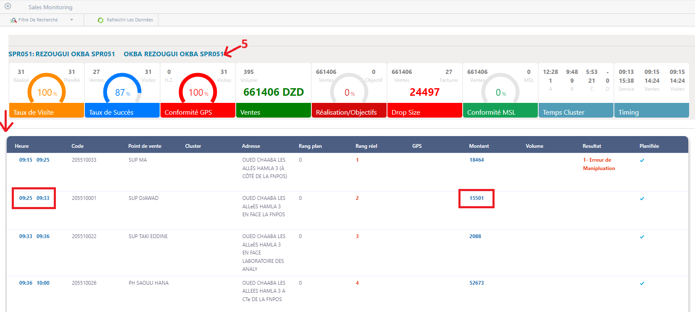

Quotas & Sales Monitoring
I- Quotas Prévente Qtés
Role: SV / ADV
- Accédez à la page "Quotas prévente Qtés".
- Dans le filtre de recherche décocher "lui-même", puis cliquer sur "Charger Données".
- Cliquez sur la zone grise pour développer la liste des produits et les prévendeurs.
-
Pour définir une quantité fixe, remplissez les colonnes "Pack" et "Unité".
- Pour verrouiller le produit, entrez des zéros "0".
- Pour rendre la quantité illimitée, laissez les cases vides.
- La colonne "Dispo" indique la quantité restante pour les fournisseurs.
- Cliquer sur "Valider" après avoir rempli et vérifié les données du quota.
les changements seront appliqués lorsque le prévendeur effectuera une synchronisation complète.

II- Sales Monitoring
Role: SV
- Accédez à la page "Sales Monitoring".
- Dans le filtre de recherche saisie la "Date".
- Remplir le "Code Role" (code route).
- Cliquer sur "Charger Données".
- Cliquez sur le texte bleu pour développer les détails des visites (l'heurs de visite, montant, etc...)

